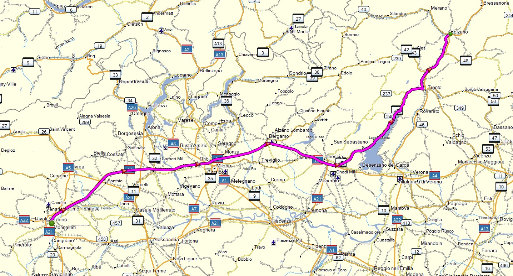
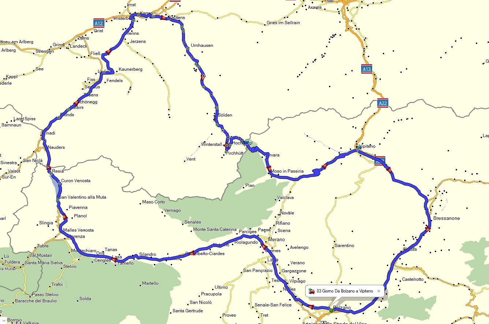
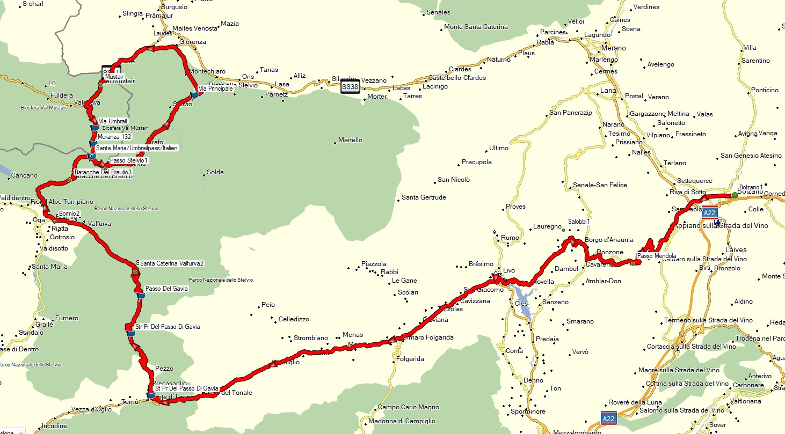
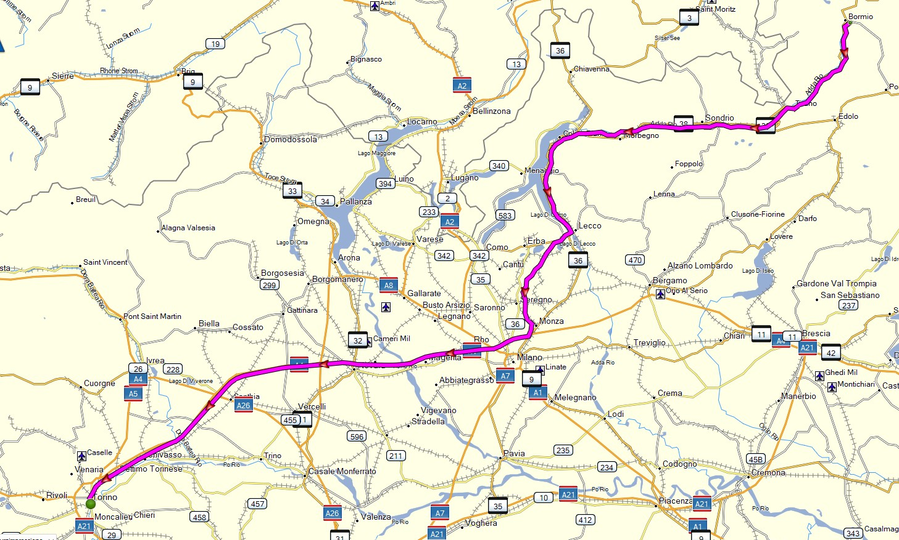

🖨️ ANTEPRIMA STAMPA PDF
Questa pagina è ottimizzata per la stampa in PDF
Usa "Salva come PDF" nelle opzioni di stampa
A BARBARAÜS
Quindici anni di strada insieme. Quindici anni in cui gli angeli custodi ci hanno guardato le spalle, mentre noi facevamo i matti in curva. Mai un graffio serio. Sembrava non potesse toccarci nulla.
Poi è arrivato quel giorno. Non in moto, non dove ce l'aspettavamo. Sei finito in quel posto dove nessuno vorrebbe mai stare – sospeso tra il restare e l'andarsene.
Ma tu hai scelto di restare. Con una forza che noi sapevamo avessi, hai combattuto, hai tenuto duro e sei tornato. Non solo sei tornato – sei tornato per guidare, vivere e a essere quello di sempre.
Dunque questi cinque giorni di giro sono per te. Ogni chilometro, ogni curva, ogni sosta è un grazie alla tua resilienza, alla tua voglia di non mollare mai. E sì, anche un grazie enorme al tuo angelo custode che quella volta ha fatto gli straordinari.
Ora siamo più maturi, viaggiamo più tranquilli (più o meno), ma sappiamo una cosa in più: siamo ancora qui, tutti insieme. E questo vale più di mille impennate.
🚀 TOUR DEI GIGANTI 2025 🚀
#GLIGNORANTILADOMENICA
di adrenalina pura
leggende conquistate
Italia, Austria, Svizzera
dislivello totale
📅 01/07/25 - 05/07/25
📍 GIORNO 1 - Torino → Bolzano
Il risveglio dell'anima | 350km, 4-5 ore
🎯 DESCRIZIONE
Il viaggio inizia dove finisce la pazienza. Partenza da Torino con un solo pensiero: arrivare dove l'asfalto diventa poesia.
🛣️ PERCORSO
- Partenza da Torino
- Autostrada A4/A22 - "L'autostrada della noia"
- Arrivo a Bolzano - Base operativa
🗺️ MAPPA PERCORSO
File GPX: giorno1.gpx | File PDF: giorno1.pdf
📊 INFO TECNICHE
🏔️ GIORNO 2 - Dolomiti: Giau, Pordoi, Sella
Battesimo del fuoco | 280km, 6-7 ore
🎯 DESCRIZIONE
Oggi si diventa uomini. Dalle Dolomiti più iconiche al passo dei leggendari. Curve che ti cambiano la vita.
🛣️ PASSI PRINCIPALI
- Passo Giau (2.236m) - 29 tornanti che ti spaccano le braccia Alta
- Passo Pordoi (2.239m) - 33 curve verso il cielo Alta
- Passo Sella (2.240m) - Curve così perfette che quasi ti dispiace finiscano Media
🗺️ MAPPA PERCORSO

File GPX: giorno2.gpx | File PDF: giorno2.pdf
📊 INFO TECNICHE
🇦🇹 GIORNO 3 - Timmelsjoch: Italia → Austria → Italia
Il gioiello austriaco | 393km, 7-8 ore
🎯 DESCRIZIONE
Oggi scopriamo il gioiello nascosto. Non solo lo Stelvio è leggenda: il Timmelsjoch è pura magia tra Italia e Austria.
🛣️ PASSI PRINCIPALI
- Passo Rombo/Timmelsjoch (2.509m) - Il doppio valico Alta
- Esplorazione strade austriache nascoste
- Valle Ötztal - La grande discesa
- Passo Giovo (2.094m) - Ritorno in Italia Media
🗺️ MAPPA PERCORSO
File GPX: giorno3.gpx | File PDF: giorno3.pdf
📊 INFO TECNICHE
👑 GIORNO 4 - Mendola, Gavia, Stelvio, Umbrali
I tre giganti | 220km, 6-7 ore
🎯 DESCRIZIONE
Oggi affrontiamo i tre giganti. Dal tecnico Gavia al maestoso Stelvio, passando per l'Umbrali svizzero. Un giorno da leggenda.
🛣️ PASSI PRINCIPALI
- Passo Mendola (1.363m) - Riscaldamento Media
- Passo Gavia (2.621m) - Il gigante selvaggio Alta
- Passo Stelvio (2.758m) - IL RE - 48 tornanti iconici Estrema
- Passo Umbrali (2.501m) - Il gioiello nascosto svizzero Alta
🗺️ MAPPA PERCORSO
File GPX: giorno4.gpx | File PDF: giorno4.pdf
📊 INFO TECNICHE
🏠 GIORNO 5 - Bormio → Torino
Il ritorno degli eroi | 320km, 4-5 ore
🎯 DESCRIZIONE
Il viaggio finisce, la leggenda inizia. Chilometri di ricordi che si mescolano all'asfalto del ritorno.
🛣️ PERCORSO
- Strada del Vino Altoatesina - Ultimo regalo
- Autostrada A22/A4 - L'ultimo saluto
- Arrivo a Torino - Gli eroi tornano a casa
🗺️ MAPPA PERCORSO
File GPX: giorno5.gpx | File PDF: giorno5.pdf
📊 INFO TECNICHE
👥 TEAM GNORANTI
Since 2007 - La follia organizzata
"Siamo Gnoranti che fanno i matti in curva...ma nel rispetto dei limiti e con la testa sul collo (vista l'età)"